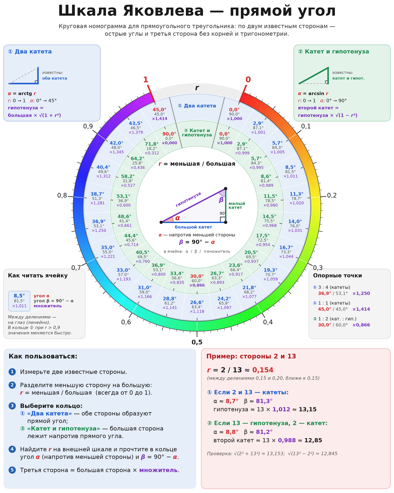
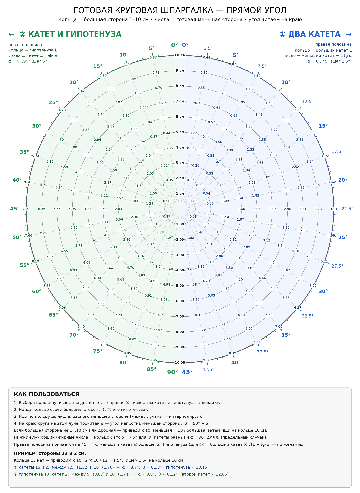
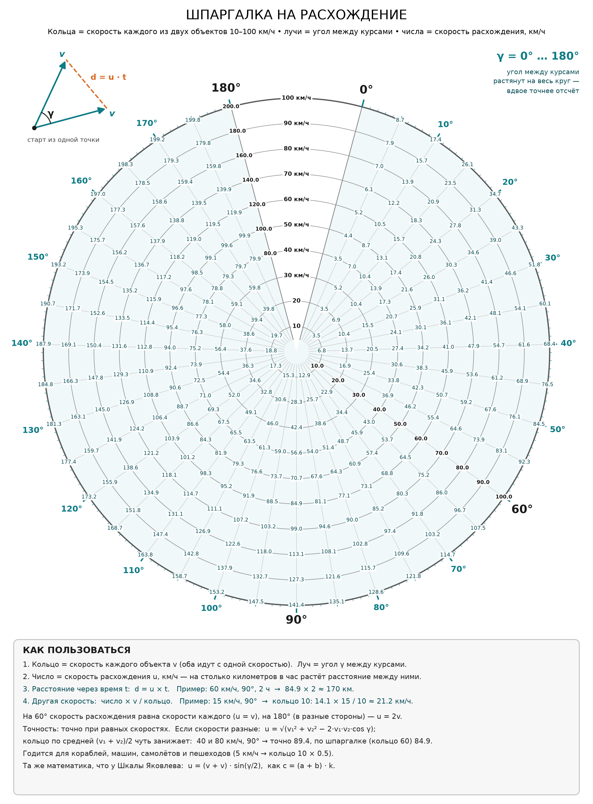

Шкала Яковлева — круговая номограмма для быстрого определения третьей стороны треугольника.
Yakovlev Scale is a circular nomogram for quickly determining the third side of a triangle.
Шкала представляет геометрическую зависимость в наглядной форме и позволяет быстро получать длину третьей стороны по заданным параметрам без ручного извлечения квадратного корня.
The scale provides a visual representation of the geometric relationship and allows the third side of a triangle to be determined quickly from the given parameters.

По кругу отложены углы от 0° до 360°, и против каждого угла стоит готовый множитель k = sin(γ/2). Найдите угол между известными сторонами, возьмите множитель напротив него, сложите стороны и умножьте сумму на множитель. Получится третья сторона: c = (a + b) × k. Синусы и корни считать не нужно, хватит одного сложения и одного умножения.
Angles from 0° to 360° run around the circle, and each angle has a ready multiplier k = sin(γ/2). Find the angle between the known sides, take the multiplier opposite it, add the sides and multiply the sum by the multiplier: c = (a + b) × k.
Для равнобедренного треугольника (a = b) результат точный. Если стороны
разные, шкала даёт немного заниженную оценку, и чем сильнее различаются
стороны, тем больше погрешность. При сторонах 3 и 4 и угле 90° шкала даёт
4,95 вместо точных 5, это около 1%.
Exact when a = b. For unequal sides the scale gives a slightly low estimate
(sides 3 and 4 at 90°: 4.95 instead of 5, about 1%).
Пример / Example: a = 5, b = 5, γ = 90°, k = 0,707, c = (5 + 5) × 0,707 ≈ 7,07.

Рабочая таблица по шкале Яковлева, где уже ничего не нужно умножать. Каждое кольцо соответствует сумме двух равных сторон, от 1 до 10 см. Лучи показывают угол между сторонами, от 0° до 360°. На пересечении кольца и луча написана готовая длина третьей стороны. Например, у двух сторон по 5 см (кольцо «10 см») с углом 90° третья сторона равна 7,07 см. Правая половина круга (0°–180°) основная, левая (180°–360°) зеркальная: углы γ и 360° − γ дают одно и то же число. Внизу листа есть краткая инструкция и пример. Шпаргалка точна для равнобедренных треугольников и удобна, когда нужно быстро найти хорду, раствор циркуля или расстояние между концами двух одинаковых планок под заданным углом.
A ready-to-use table: each ring is the sum of two equal sides (1–10 cm), each ray is the angle between them, and the number at the intersection is the third side. Example: two 5 cm sides (ring “10 cm”) at 90° give 7.07 cm. The left half (180°–360°) mirrors the right one; a short legend with an example is printed at the bottom of the sheet.
Автор визуального представления: Владимир Яковлев.
Yakovlev Scale visual representation: Vladimir Yakovlev.
2026
Две картинки для любого прямоугольного треугольника: по двум известным сторонам найти острые углы и третью сторону. Здесь нет допущения a = b, результат точен в пределах точности чтения шкалы.

Цветная номограмма. Разделите меньшую сторону на большую: r = меньшая / большая (от 0 до 1), найдите r на внешнем цветном кольце и прочитайте ячейку своего кольца: ① «Два катета» — α = arctg r; ② «Катет и гипотенуза» — α = arcsin r. α — острый угол напротив меньшей стороны, β = 90° − α. Третья сторона = большая сторона × множитель из ячейки (① √(1 + r²) — гипотенуза, ② √(1 − r²) — второй катет).

Готовая шпаргалка. Кольца — большая сторона 1–10 см, числа — готовая меньшая сторона, угол α читается на краю круга. Правая половина — ① «Два катета» (α от 0° до 45°), левая — ② «Катет и гипотенуза» (α от 0° до 90°). Если большая сторона больше 10 см или дробная, приведите её к 10: меньшая × 10 / большая, и ищите на кольце 10.
Пример: стороны 2 и 13, r = 2 / 13 ≈ 0,154 (на шпаргалке: 2 × 10 / 13 ≈ 1,54 на кольце 10). Катеты 13 и 2: α ≈ 8,7°, β ≈ 81,3°, гипотенуза ≈ 13 × 1,012 ≈ 13,15. Гипотенуза 13 и катет 2: α ≈ 8,8°, β ≈ 81,2°, второй катет ≈ 13 × 0,988 ≈ 12,85.
Two pictures for any right triangle: from two known sides, find the acute angles and the third side (no a = b assumption). Colour nomogram: compute r = smaller / larger side, find it on the outer colour ring and read your ring: ① two legs, α = arctan r; ② leg and hypotenuse, α = arcsin r. α is opposite the smaller side, β = 90° − α; third side = larger side × the multiplier in the cell. Ready cheat sheet: rings = larger side 1–10 cm, numbers = ready smaller side, read α at the edge; right half = two legs (0–45°), left half = leg and hypotenuse (0–90°). For a larger side over 10 cm, scale to 10: smaller × 10 / larger.
Example: sides 2 and 13. Legs: α ≈ 8.7°, β ≈ 81.3°, hypotenuse ≈ 13.15. Hypotenuse 13 and leg 2: α ≈ 8.8°, β ≈ 81.2°, other leg ≈ 12.85.

Два объекта выходят из одной точки с одинаковой скоростью v, угол между их курсами γ. Кольца — скорость каждого (10–100 км/ч), лучи — угол γ от 0° до 180° (растянут на весь круг), число на пересечении — скорость расхождения u = 2v · sin(γ/2), км/ч. Расстояние между объектами через время t: d = u × t. Для другой скорости: число × v / кольцо. На 60° u = v, на 180° u = 2v.
Пример: 60 км/ч, угол 90°, 2 часа → 84,9 × 2 ≈ 170 км.
Точно при равных скоростях. Если скорости разные, точная формула u = √(v₁² + v₂² − 2·v₁·v₂·cos γ), а кольцо по средней скорости (v₁ + v₂)/2 даёт немного заниженный результат (40 и 80 км/ч под 90°: точно 89,4, по шпаргалке 84,9). Подходит для кораблей, машин, самолётов и пешеходов. Это та же формула, что у Шкалы Яковлева: u = (v + v) · sin(γ/2).
Two objects leave one point at the same speed v with angle γ between their courses. Rings = speed of each (10–100 km/h), rays = γ from 0° to 180° (spread over the full circle), number = divergence speed u = 2v · sin(γ/2), km/h. Distance after time t: d = u × t; for another speed: value × v / ring. Example: 60 km/h, 90°, 2 h → 84.9 × 2 ≈ 170 km. Exact for equal speeds; for different speeds u = √(v₁² + v₂² − 2·v₁·v₂·cos γ), and using the ring for the average speed slightly underestimates. Works for ships, cars, planes and walkers — the same maths as the main scale.